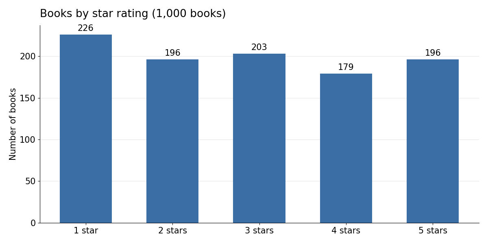
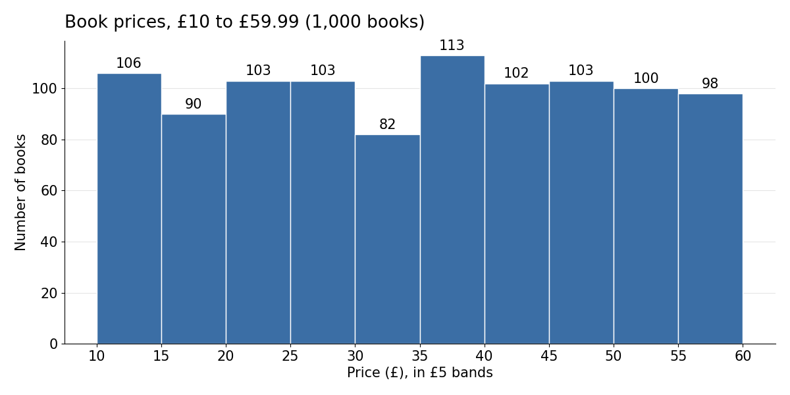

Project
A Python script that reads every book on a practice bookshop website and stores the details in a searchable database.
Each book becomes one row in a table called books, with five columns:
Builds the URL catalogue/page-N.html, starting at N = 1, and downloads it.
Parses the HTML and collects every product_pod article on the page (20 per page).
Reads name, price (strips £, makes it a number), stock text, rating (word to 1–5) and the full image URL.
Pauses 0.5 seconds to go easy on the site, adds 1 to N and loops back to step 1.
Turns the list of 1,000 book records into a DataFrame.
Writes the DataFrame to the books table in books.db, replacing any earlier copy.
Runs a query for books under £20, sorted by price, and prints the first five.
Figures below come straight from the saved books.db file in the repo.


Once the data is saved, the script checks it with a real SQL query: books under £20, cheapest first.
SELECT * FROM books WHERE price < 20 ORDER BY price returns 196 rows; these are the first five, matching the output saved in the notebook.